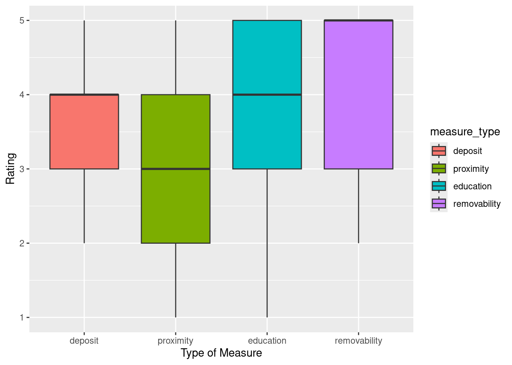

![]()
Code
#summarise important cols and only use distinct rows
tidydata_summarized <- tidydata |>
summarise(id, measure_type,
measure_rating) |>
distinct()
tidydata_summarized |>
ggplot(mapping = aes(x = measure_type,
y = measure_rating,
fill = measure_type)) +
geom_boxplot(outlier.shape = NA) +
scale_x_discrete(labels = c("deposit", "proximity", "education", "removability")) +
scale_fill_discrete(labels = c("deposit", "proximity", "education", "removability")) +
labs(x = "Type of Measure", y = "Rating")
